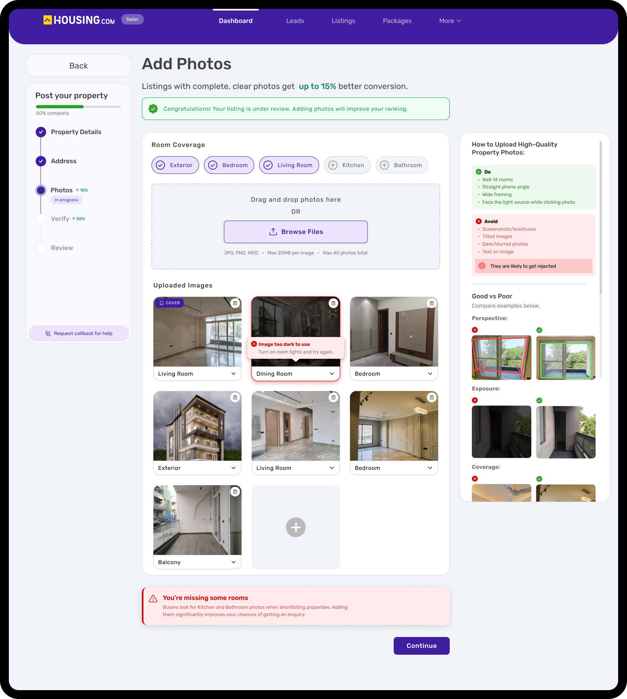
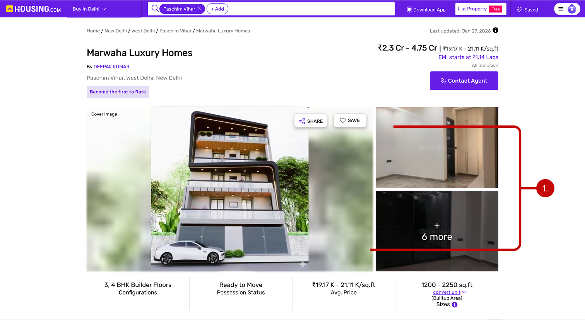
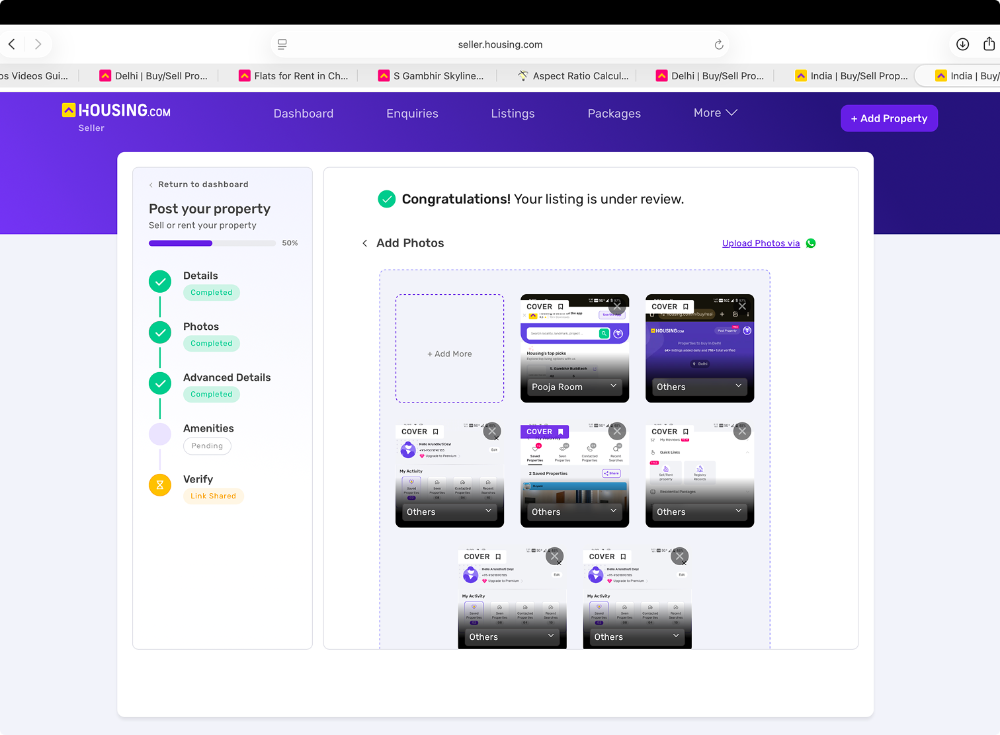
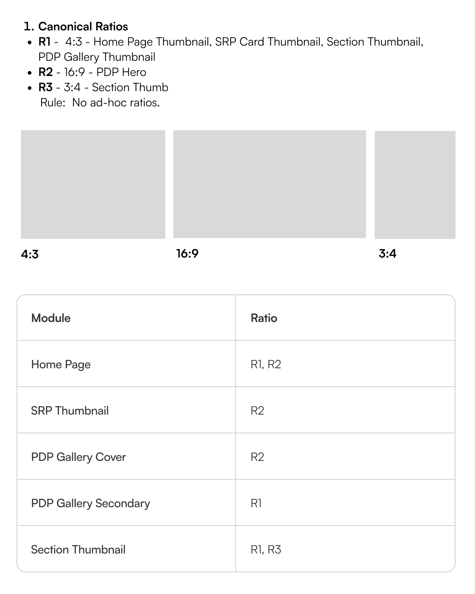
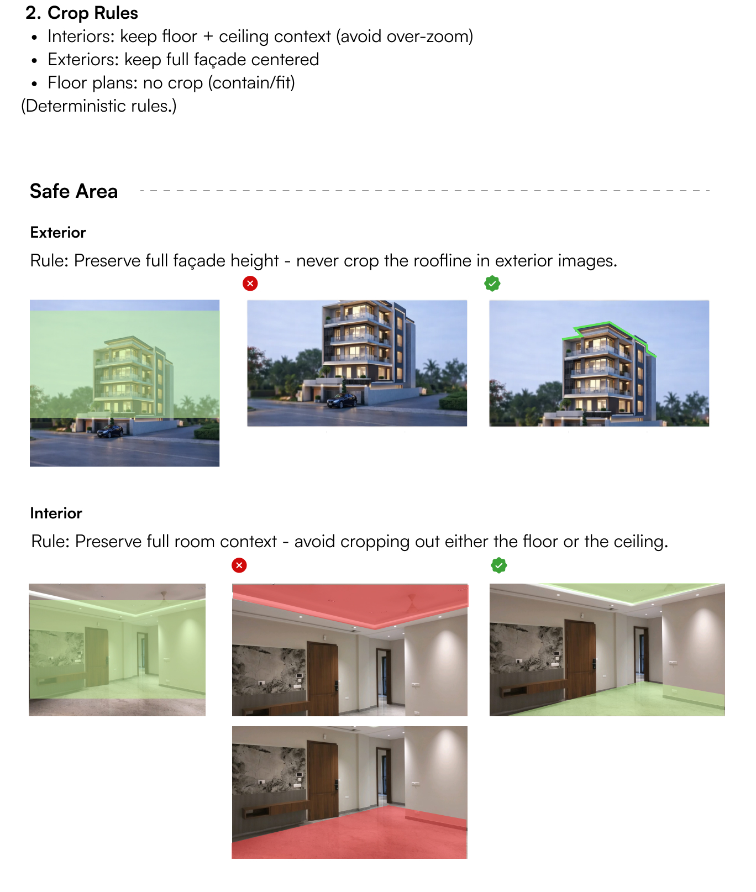
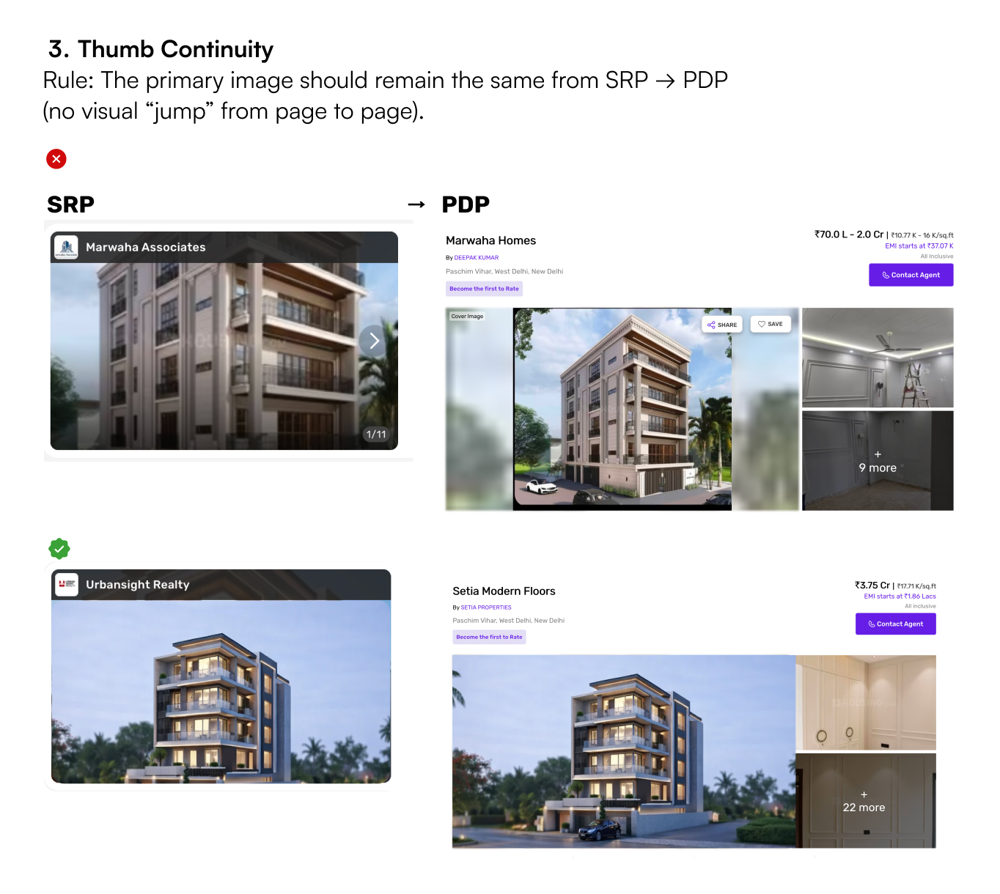
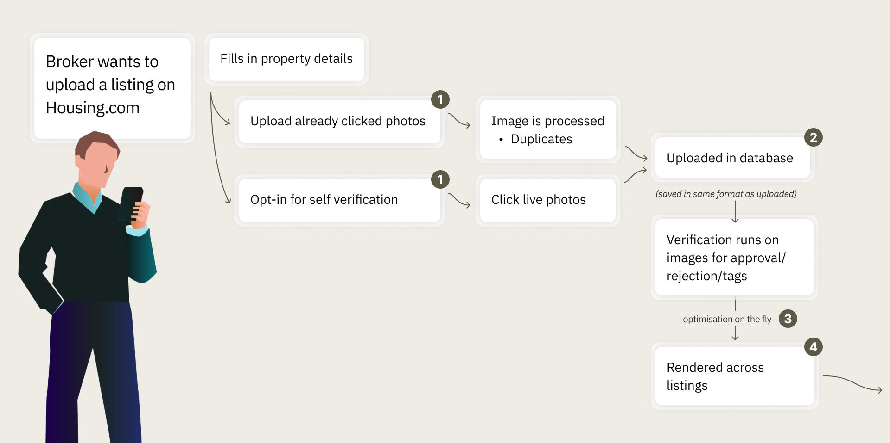

01 · Upload
5 upload entry points
Five ways in, five different sets of rules.
One flow locked orientation and room order. Another had no rules at all.
Housing.com | Jan 2026 – Jul 2026
An end-to-end audit of how a property photo travels from a broker's phone to a buyer's screen, and a strategy to build quality in from the first upload.
Read the story ↓
Housing.com | Jan 2026 – Jul 2026
An end-to-end audit of how a property photo travels from a broker's phone to a buyer's screen, and a strategy to build quality in from the first upload.
Every listing on Housing.com starts with photos that a broker or owner takes on their phone. Before a buyer sees them, they pass through four systems: upload, verification, optimisation and rendering, each looked after by a different team. This project follows that whole journey, not any single screen.
The short version
Buyers judge a listing by its photos first, and many Housing.com photos were dark, blurry or awkwardly cropped.
The gap ↓Find out why it keeps happening, and propose a strategy that fixes it for good.
The answer ↓I traced one image through the whole pipeline and found quality was only checked at the very end. My answer: Prevent, Preserve, Present.
How I got there ↓Two recommendations, a guided upload flow with guardrails and standardised rendering ratios, were picked up first.
What I expect ↓01 · The gap
Before a buyer requests a call, they scroll. A listing gets a few seconds of attention, and the photos do most of the talking in that time. Many Housing.com listings were losing that moment.




Photos rank as the most useful feature in property search, ahead of price, location and description.
NAR, 2024Listings with fewer than 9 photos get 20× fewer enquiries. Image isn't presentation. It's conversion.
ZillowListings on Housing.com: the multiplier on every ungoverned decision behind the pipeline.
Internal data, Feb 202602 · The answer
Stop bad photos at the source, protect good ones on their way through and show every photo the way it deserves to be seen: Prevent, Preserve, Present.
Prevent
Instead of finding out after review, brokers now get guidance right beside the upload box and feedback the moment a photo lands. A dark photo is flagged on the spot, along with how to fix it.



Preserve
A clear rule for which variant serves which slot, so compression stops softening photos that started out sharp.
Recommended for a later phase
Present
I wrote the rules for how every listing photo is framed: three standard ratios, crop rules that protect what buyers look for, and a cover photo that stays put from search results to the property page.
1Three ratios. No ad-hoc exceptions.

2Never crop the roofline. Keep the floor and ceiling in frame.

3Three ratios. No ad-hoc exceptions.

03 · How I got there
Picture a broker in an empty flat, carefully clicking every room. Before those photos reach a buyer, four different systems check, compress, resize and crop them, and any one of them can quietly undo that effort. So I stopped judging photos and followed one all the way through.

4 stages, 4 user groups. No single owner of the end-to-end experience.
01 · Upload
5 upload entry points
One flow locked orientation and room order. Another had no rules at all.
02 · Verification
~5 min per listing
03 · Optimisation
~15 compression variants
A sharp original could reach buyers as a blurry thumbnail.
04 · Rendering
~39 web · ~32 mobile ratios
Up to five on the home page alone. The same photo looked different everywhere.
The insight
Each stage worked on its own. But because nothing guided a photo at upload, every stage after it was cleaning up. The audit rejected, reviewers checked by hand, and rendering cropped whatever arrived. The fix wasn't a stricter filter at the end. It was moving quality to the beginning.
04 · What I expect
Hypotheses, not measured results. Each one names the signal I'd watch.
I expectFewer poor photos reach review.
Guidance beside the upload box and instant flags mean brokers fix a bad photo while still in the room.
I expectEvery photo looks the same everywhere, so more buyers enquire.
Three ratios and crop rules that protect the roofline, floor and ceiling, with a cover photo that stays put.
I expectSharp originals stay sharp for buyers.
One rule for which variant serves which slot, so compression stops softening good photos.
Up next
Snapp: An Immersive News Companion